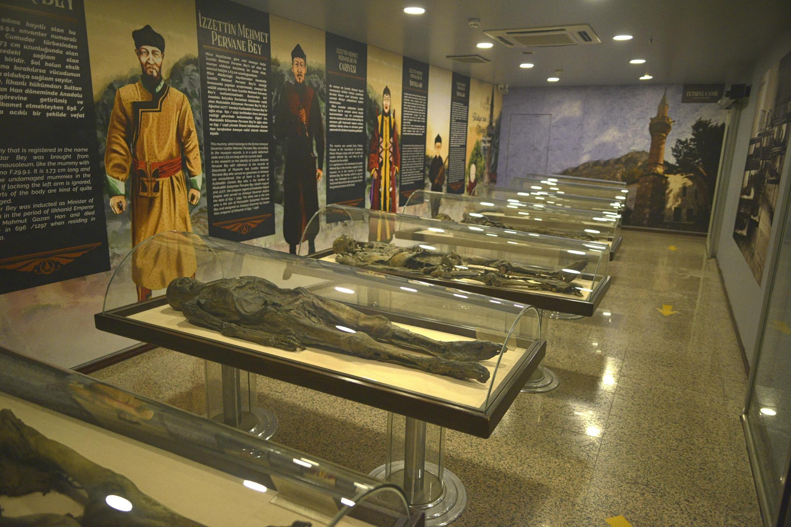

Kral Kaya Mezarları
Harşena Dağı’na oyulmuş bu anıt mezarlar, Pontus Krallığı dönemine aittir. Şehrin simgesi hâline gelmiş ve UNESCO aday listesindedir.

Amasya Kalesi
Amasya’nın kuzeyinde Harşena Tepesi’nde bulunan kale, Bizans ve Osmanlı dönemlerinde stratejik öneme sahipti.

Yalıboyu Evleri
Yeşilırmak kıyısında sıralanmış bu tarihi evler Osmanlı mimarisinin izlerini taşır ve günümüzde turizme kazandırılmıştır.

Amasya Müzesi
İlhanlı dönemine ait mumyaları ile bilinen müze, arkeoloji ve etnografya açısından zengin koleksiyona sahiptir.
Ferhat ile Şirin Efsanesi
Amasya’da geçtiğine inanılan bu aşk efsanesi, Ferhat’ın dağları delerek açtığı su kanalı ile özdeşleşmiştir.
Amasyaspor
Amasya'nın sembol spor kulübü olan Amasyaspor, yeşil-beyaz renkleriyle hem sportif hem kültürel bir değerdir.
Kaynakça
- www.amasya.bel.tr
- T.C. Kültür ve Turizm Bakanlığı
- Amasya Müzesi Arşivleri